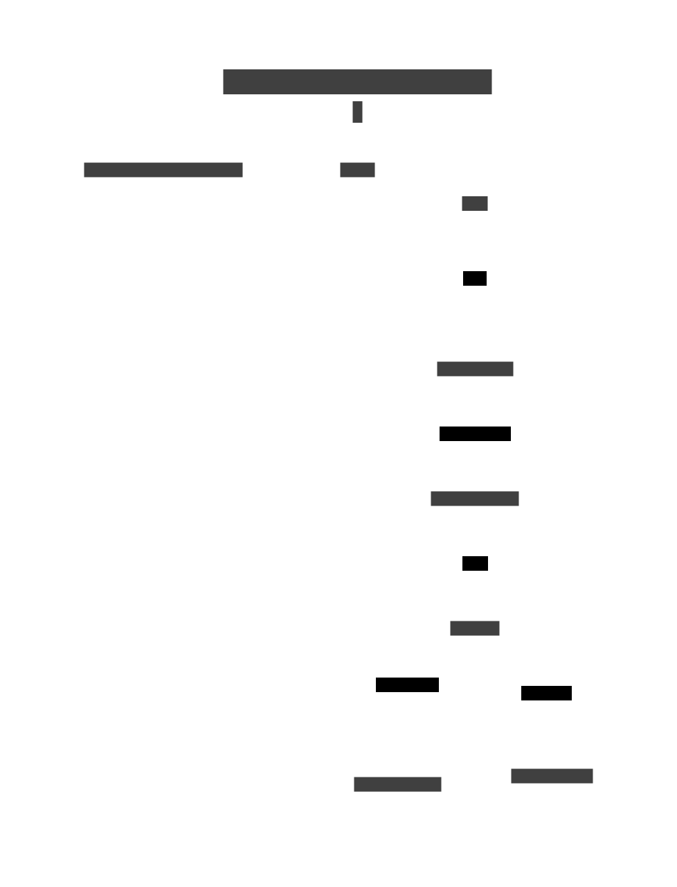

Contents
- Setup & Installation
- API Reference
- File Uploads
- Authentication
- Docker & Deployment
- Testing
- Logging & Debugging
- Contributing
- FAQ
HomeBikeManager Documentation
Welcome to the HomeBikeManager documentation. This guide covers everything you need to develop, deploy, and use the HomeBikeManager Flask REST API.
Project Timeline
- 2025-07: Project scaffolded, Flask app and models created, Docker and requirements set up.
- 2025-07: User registration, login, and API key authentication implemented.
- 2025-07: CRUD endpoints for bikes and parts added, with automated pytest-based tests.
- 2025-07: Logging and error handling added.
- 2025-07: .gitignore, documentation, and VS Code tasks improved.
- 2025-07: GitHub issues filed for all major features and improvements.
- 2025-07: docs/ folder created with actionable, status-aware documentation for all major features.
- 2025-07: Automation script added to sync docs/ to the GitHub Wiki and deploy with MkDocs.
What Works
- User registration & login
- API key authentication
- CRUD for bikes and parts
- Automated tests (pytest)
- Logging (Python logging module)
- Dockerfile and requirements.txt for deployment
What Doesn't (Yet)
- Rides and file uploads (GPX/KML)
- Calendar events
- Advanced authentication (JWT, OAuth)
- Anything fancy
System Overview

Figure 1: High-level concept diagram of the HomeBikeManager system, showing users, API, database, uploads, and main entities. This diagram provides a bird's-eye view of how the main components interact, including user actions, API endpoints, persistent storage, and the relationships between bikes, parts, rides, and calendar events.
Architecture & Workflows
API Endpoints Map

Figure 2: This diagram shows the main REST API endpoints, their relationships, and how the API is organized. Each rectangle represents a resource (e.g., bikes, parts, rides), and arrows indicate management or interaction flows. Use this as a quick reference for endpoint structure and resource responsibilities.
Database Schema

Figure 3: The database schema diagram illustrates the main models (User, Bike, Part, Ride, CalendarEvent) and their relationships. This helps developers understand how data is structured, how entities are linked, and how to extend the schema for new features.
Authentication Flow

Figure 4: This diagram details the authentication process, from user registration and login to API key issuance and request validation. It clarifies the security model and the steps required for secure access to the API.
File Upload Workflow

Figure 5: This workflow shows how file uploads (GPX/KML) are validated, stored, and linked to rides. It covers validation, storage, and the connection between uploaded files and ride records.
Deployment Architecture

Figure 6: The deployment architecture diagram shows how the app, Docker container, database volume, uploads, and client interact. Use this to understand how to deploy, scale, and persist data in production.
Project Status (as of July 2025)
- User registration, login, and API key authentication are implemented and tested.
- Bike and part endpoints are implemented and tested.
- Models for rides and calendar events exist, but endpoints and file upload logic are not yet implemented.
- Dockerfile and requirements.txt are present and functional.
- Pytest-based tests cover authentication, bikes, and parts.
- Logging is set up using Python’s logging module.
- File upload, advanced authentication, and calendar/ride endpoints are pending.